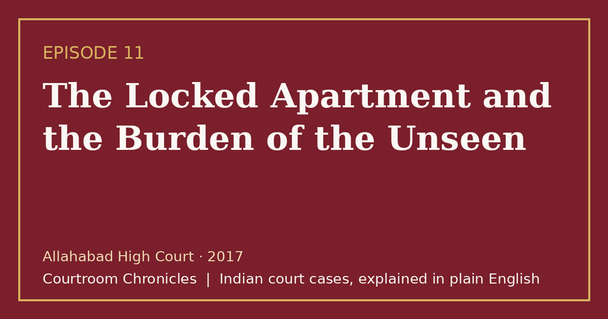

Episode 11 · 2026-10-13
The Locked Apartment and the Burden of the Unseen
When a teenage girl and a domestic helper are murdered inside a suburban home, the high court overturns a conviction based on flawed circumstantial assumptions.

Listen
- Court
- Allahabad High Court
- Year
- 2017
- Legal Question
- Whether parents present in an apartment can be convicted solely on presumption without primary evidence
- Key Forensic Evidence
- Conflicting DNA identification labels, unsealed crime scene, and unlatched outer mesh door
Key takeaways
- The prosecution cannot use statutory burden provisions as a shortcut to replace missing links in a circumstantial murder trial.
- Compromised crime-scene preservation and procedural handling errors in scientific laboratories fatally undermine the prosecution's case.
- Courts must rigorously evaluate evidence on legal standards rather than being swayed by media speculation or moral outrage.
- When the chain of circumstantial evidence leaves open a reasonable possibility of innocence, an acquittal must follow as a matter of law.
The case in brief
On an early summer morning in a suburban residential apartment, a morning domestic worker arrived to find the outer entrance door resting merely on its latch. Inside the master bedroom, the parents were awake, but their teenage daughter was discovered dead on her bed with an incised neck wound and blunt skull fractures. Initial police inquiries focused immediately on the missing domestic worker as the primary suspect, initiating an interstate manhunt.
The trajectory of the investigation altered drastically twenty-four hours later when the decomposing body of the missing domestic worker was discovered on the building's locked rooftop terrace. Crime-scene preservation was catastrophically compromised as dozens of visitors, media crews, and police personnel trampled over the apartment and terrace before scientific teams could collect fingerprints. A central investigating agency subsequently prosecuted the parents, arguing that because four persons were inside the residence and two were killed, the survivors bore the burden of explanation under evidentiary rules.
The trial court convicted both parents of double murder and destruction of evidence, imposing sentences of life imprisonment. However, on appeal, the high court conducted a meticulous forensic re-examination of the entire evidentiary record. The appellate bench discovered grave scientific discrepancies, including laboratory typographical errors that mislabeled biological evidence, as well as an unidentified bloody palm print on the rooftop terrace that matched neither parent.
The high court acquitted both parents, ruling that the prosecution had failed to establish an unbroken chain of circumstantial evidence. The court held that the statutory rule placing the burden of proving facts especially within knowledge cannot be used by the prosecution to bypass its initial duty of proving guilt beyond reasonable doubt. Reaffirming classical evidentiary principles, the bench concluded that suspicion, however severe, cannot take the place of concrete proof.
Timeline
- The Morning Discovery
A domestic worker finds the outer door unlatched and discovers the teenage victim dead inside her bedroom.
- The Second Body on the Terrace
The body of the missing domestic worker is discovered concealed on the building's locked rooftop terrace.
- The Investigative Closure Report
The central investigating agency files a closure report citing insufficient evidence, which the magistrate rejects.
- The Trial Court Conviction
The trial court finds the parents guilty of murder and destruction of evidence, sentencing them to life imprisonment.
- The High Court Acquittal
The high court sets aside the conviction, acquitting the parents due to fatal evidentiary gaps and contaminated forensics.
What the court decided
The high court allowed the appeals, set aside the convictions and life sentences, and acquitted both parents of all charges.
Key holdings
- The statutory burden under Section 106 of the Evidence Act cannot be invoked to convict an accused when the prosecution fails to establish a complete circumstantial chain.
- The presence of alternative plausible theories consistent with innocence entitles the accused to an acquittal under criminal jurisprudence.
- Severe contamination of the crime scene and contradictory forensic laboratory records destroy the probative value of circumstantial prosecution theories.
- Suspicion, however intense or widespread in public perception, cannot substitute for legal proof in a court of law.
Legal principles
Limits of the Special Knowledge Rule
The statutory provision shifting the burden of proving facts especially within personal knowledge cannot relieve the prosecution of its primary burden to establish a prima facie case.
In this case: The court ruled that the parents could not be called upon to explain the killings under Section 106 when the prosecution failed to prove the home was impenetrable to outsiders.
The Doctrine of Competing Hypotheses
In circumstantial cases, where the proved facts permit two reasonable views, the court is obligated to adopt the hypothesis consistent with the innocence of the accused.
In this case: Because the evidence supported the possibility of outside assailants entering through an unlatched door, the accused were entitled to the benefit of doubt.
Integrity of Crime Scene and Chain of Custody
Physical and biological evidence loses its evidentiary credibility when investigating agencies fail to secure the scene from contamination and handle exhibits carelessly.
In this case: The court held that public trampling of the apartment and conflicting forensic DNA reports created reasonable doubt that precluded conviction.
The law then and now
The incident occurred in May 2008, and the trial and appeal were conducted under the Indian Penal Code, 1860, the Code of Criminal Procedure, 1973, and the Indian Evidence Act, 1872. The Bharatiya Nyaya Sanhita, 2023, Bharatiya Nagarik Suraksha Sanhita, 2023, and Bharatiya Sakshya Adhiniyam, 2023 took effect on 1 July 2024 and apply to offences committed on or after that date.
Left: the law applied to this case. Right: the matching provision today (the new criminal codes apply only to offences on or after 1 July 2024).
Substantially unchanged; restructured under Chapter VI of the new penal code. See all 16 episodes on this provision →
- Indian Penal Code, 1860Section 201Causing disappearance of evidence of offence, or giving false information to screen offenderBharatiya Nyaya Sanhita, 2023Section 238Causing disappearance of evidence of offence, or giving false information to screen offender
Substantially unchanged; provides punishment for screening offenders or destroying evidence. See all 6 episodes on this provision →
Substantially unchanged; governs burden of proof for facts peculiarly within personal knowledge. See all 3 episodes on this provision →
Consolidated definitions of proved, disproved, and not proved under Section 2. See all 3 episodes on this provision →
Sources
- Judgment of the High Court of Judicature at Allahabad, 2017
- Indian Penal Code, 1860 (High Court of Tripura Official Text)
- Bharatiya Nyaya Sanhita, 2023 and IPC Comparative Table (UP Police)
- Bharatiya Sakshya Adhiniyam, 2023 (High Court of Tripura Official Text)
- Bharatiya Sakshya Adhiniyam and Evidence Act Comparative Table (UP Police)